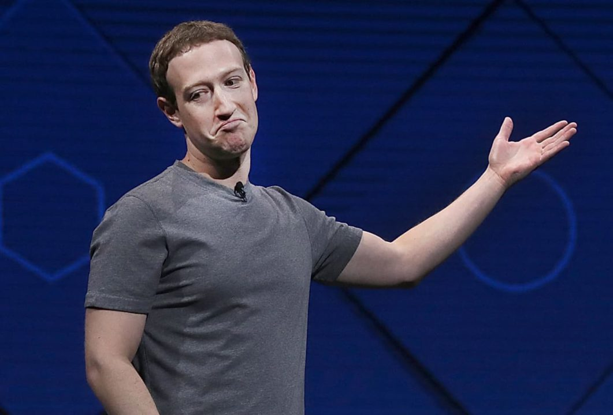

Sem dúvidas se tornar embaixador ajudou muito a amenizar as crises, depois do final da gloriosa URSS Mark se manteve em solo americano e entendeu perfeitamente o sistema economico. Se tornou empresário e mudou de sobre nome, hoje atendendo por Mark Zuckerberg.
